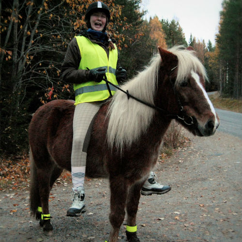

Julias laborationsblogg
Hej jag heter Julia Källberg. Jag är 20 år. Jag är en stark man.
Jag är från den lilla orten
Säråker
som ligger i Timrå men jag säger alltid att jag är från Sundsvall för att det är större,
så att folk ska tycka jag är lite coolare än vad jag egentligen är.
Mina intressen
- Äta
- Sova
- Dö på COD med pojkvännen
- Umgås med fina människor
- Umgås med fula människor
- Rita/måla eller vad man säger
- Spela piano, ca en gång om året
- Träna. De ca två gånger om året som jag är frisk
- Sitta vid datorn och slösa bort en massa tid
- Sitta med mobilen och slösa bort ännu mer tid
- Nu börjar listan bli lång och jag är för lat för att komma på fler saker jag gillar att göra
Jag rider inte. Men här är en bild där jag sitter på en häst.

Min familj
- Föräldrar
- Mamma Anita
- Pappa Ulf
- Ett helt syskon
- Frida
- Halverade syskon
- Henrik
- Evelina
- Pojkvännen
- Tim
Vad är jag bra på?
Att vara dålig
Vad är jag mindre bra på?
Att vara bra
Tidigare utbildning
Arbetslivserfatenhet
Sommarjobb på Bogrundet plantskola de 5 senaste somrarna tror jag, har tappat räkningen, kan vara 6
Tidigare programmering
Gjorde en liten liten webbsida som skulle föreställa en ortfolio som projektarbete i gymnasiet.
Förra året, då jag försökte mig på denna utbildning på campus.
Vad fick mig att söka utbildningen?
Det hela syskonet
Tankar inför framtiden
- Vovve
- Volvo
- Villa
En klockren sida >>